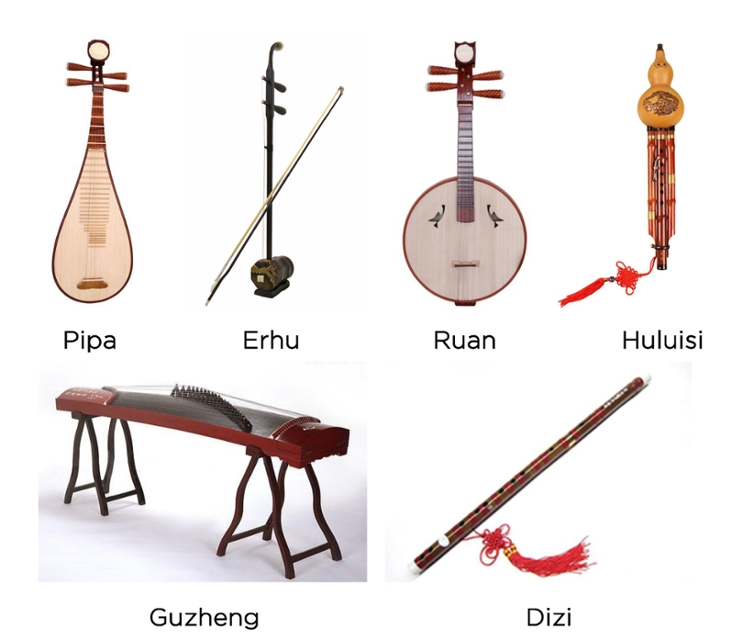
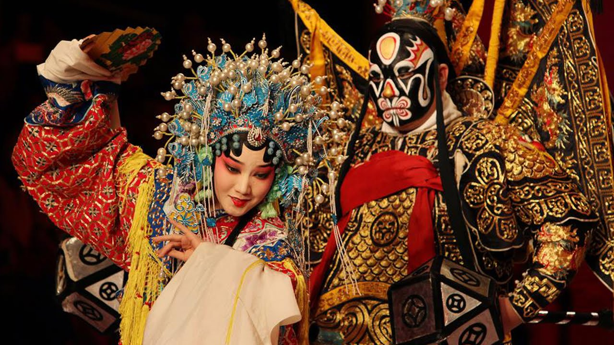
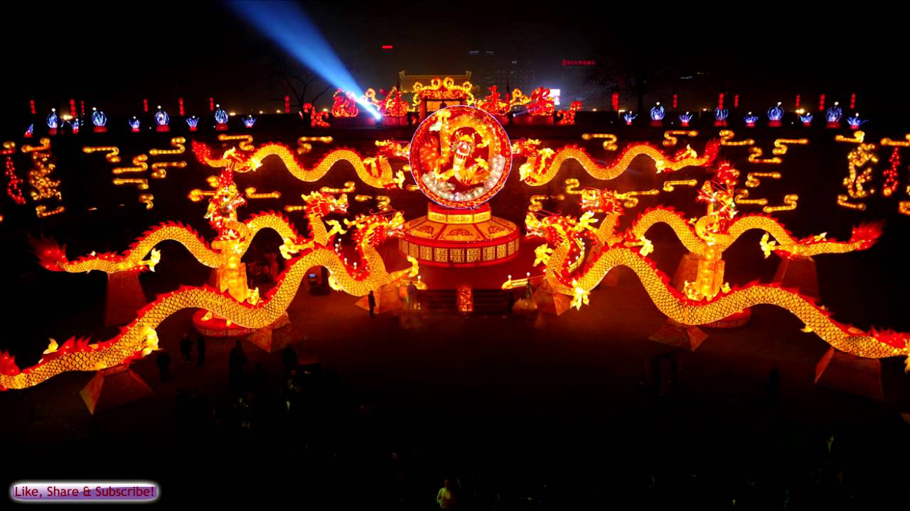
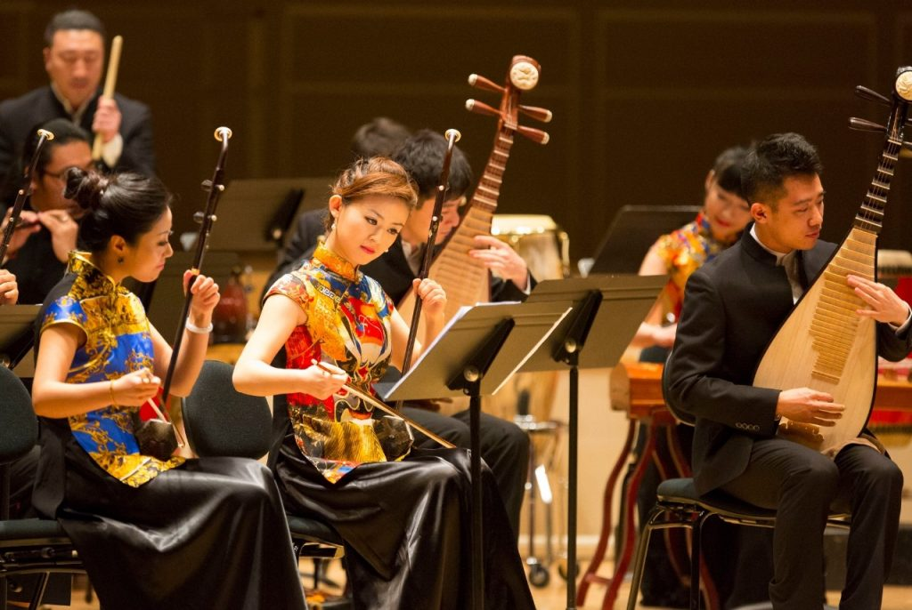

1. Traditional Chinese Instruments
Traditional Chinese music is deeply rooted in the sounds of ancient instruments that have been used for thousands of years. Some of the most iconic instruments include the guzheng (a plucked zither), pipa (a four-stringed lute), erhu (a two-stringed bowed instrument), and the dizi (bamboo flute). Each instrument has a unique sound and plays an important role in both classical music and folk traditions. The instruments are known for their expressive range and ability to convey emotions through their melodies.
2. Chinese Opera: A Fusion of Music, Drama, and Dance
Chinese opera is a highly stylized form of theater that combines singing, acting, acrobatics, and elaborate costumes. The most famous type is Peking Opera, known for its beautiful yet complex vocal techniques, rhythmic music, and colorful performances. The stories in Chinese opera often draw from history, folklore, and traditional literature. Performers undergo years of rigorous training to master the intricate movements, gestures, and vocal skills required.
3. The Role of Music in Chinese Festivals
Music plays an integral part in many of China's traditional festivals. During Chinese New Year, the sounds of drums and gongs are heard during lion and dragon dances to scare away evil spirits and bring good luck. The Mid-Autumn Festival often includes moon gazing accompanied by the playing of traditional instruments. Music at these festivals creates a festive atmosphere, symbolizing unity, joy, and prosperity.
5. The Influence of Chinese Music Globally
Chinese music has had a significant influence on global music, particularly in the fields of film scores and world music. Famous composers like Tan Dun, who won an Academy Award for his score for *Crouching Tiger, Hidden Dragon*, have helped introduce Chinese musical aesthetics to the international stage. Chinese music’s rich melodies and unique instrumentation have also inspired countless musicians worldwide, leading to cross-cultural collaborations and performances.